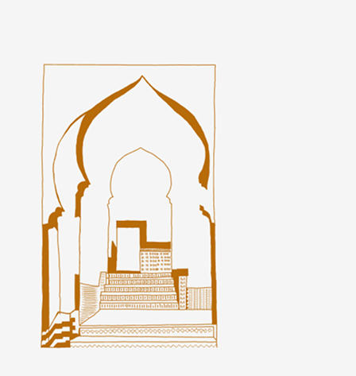

TEMA 3
Moodboard og værdiord
I tema 3 lærte vi om ideudvikling, bl.a. moodboard som et værktøj til ideudvikling, det kan være ift. stil og tone men kan også bruges til andet brug hvor det æstetiske ikke er i fokus, som f.eks. at beskrive en målgruppe eller at undersøge form på noget bestemt, til en skitse - dette kaldes “reference billeder”.
Jeg brugte moodboard til at researche og beskrive en stil og tone til min hjemmeside, hvilket hjalp mig med at udføre min vision på hjemmesiden ift. stil og tone men også indhold. Jeg lavede moodboardet i et Figma dokument og tog alt mit research fra Pinterest - derfor kan jeg ikke vise mit moodboard her pga. copyright. Til mit moodboard tilknyttede jeg også nogle værdiord, der var tydlig på mit moodboard og min endelige side - værdiordene var "imødekommende/kulturelt/folkeligt"
Favicon
I tema 3 lærte vi hvad et favicon er og hvordan man laver et - favicon er et lille ikon der repræsenterer en hjemmeside. I browseren vises favicon til venstre for adressefeltet, når man er inde på en hjemmeside. Til dette projekt tegnede jeg selv baggrundsbilledet i Figma, så til mit favicon, tog jeg mit tegnede element og fjernede baggrundsfarven og brugte det som mit favicon, det ser ud som følgende:
Det samme tegnede billede som er brugt som mit favicon, har jeg også brugt som mit logo og som baggrundsbilledet på min hjemmeside - jeg har valgt at bruge det som favicon, logo og baggrund fordi det styrker branding og genkendelighed. Fordi det er håndtegnet giver det også personlighed.